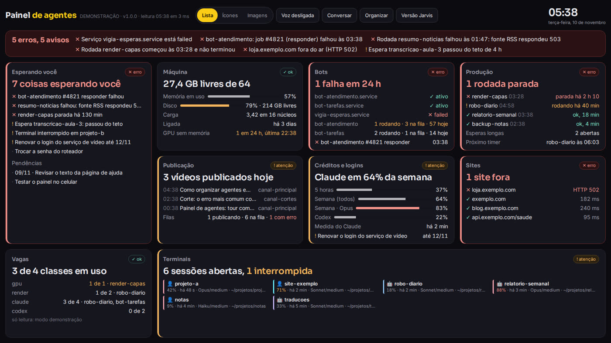
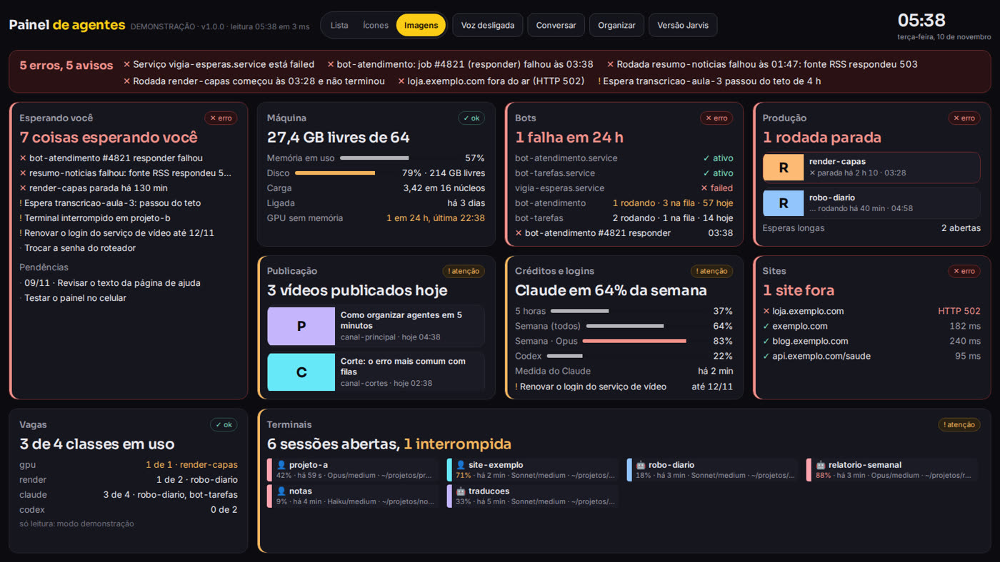
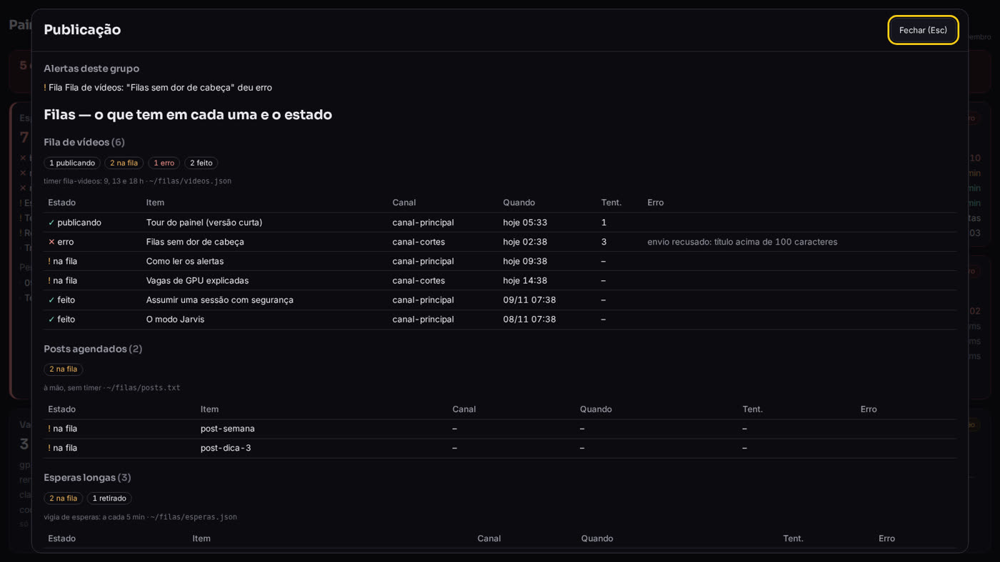
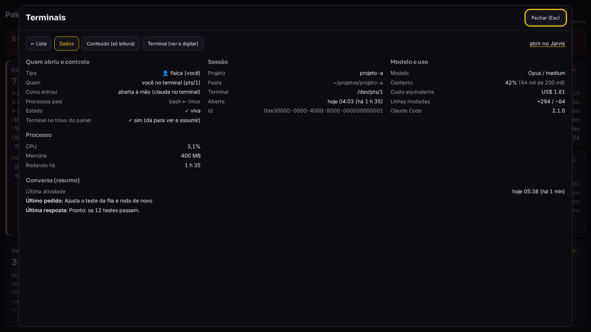
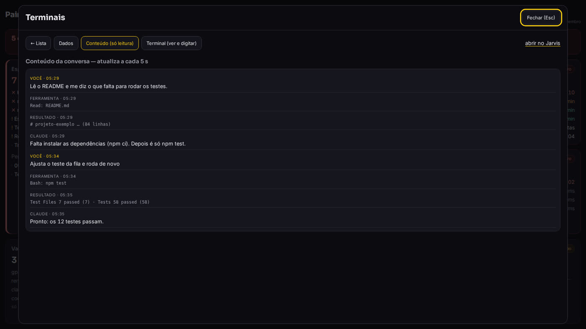
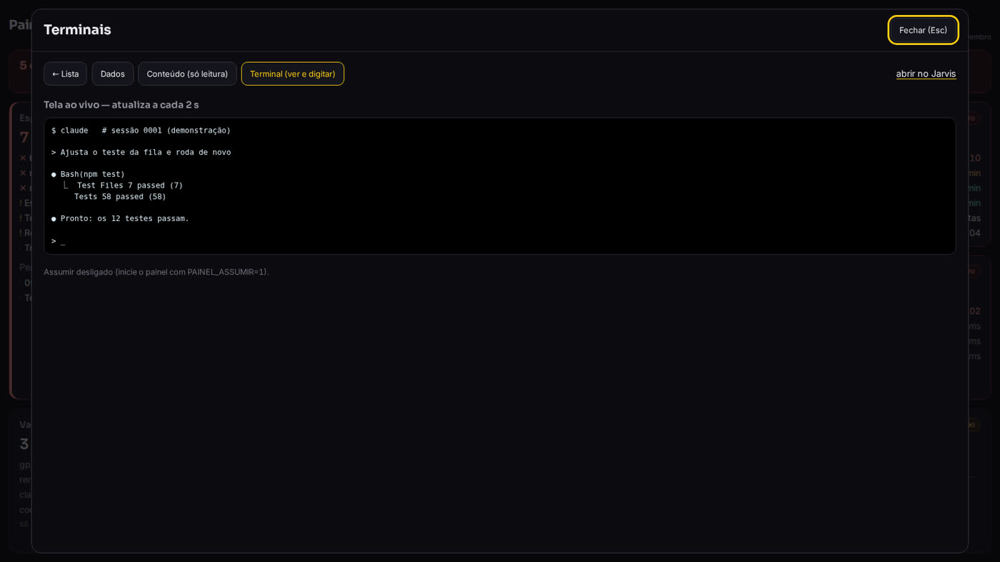
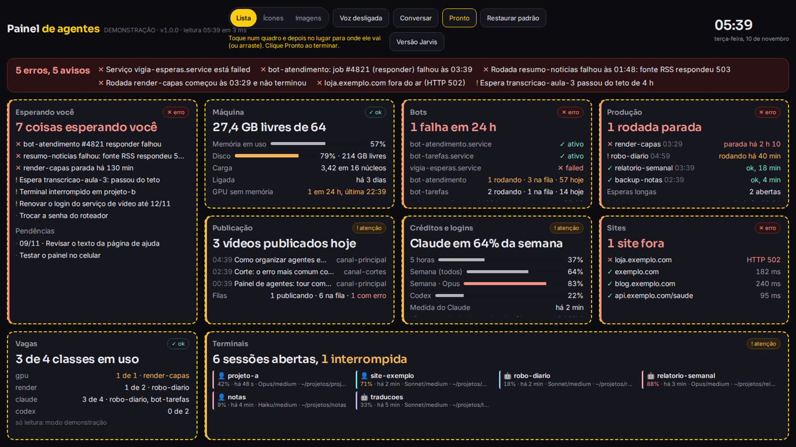
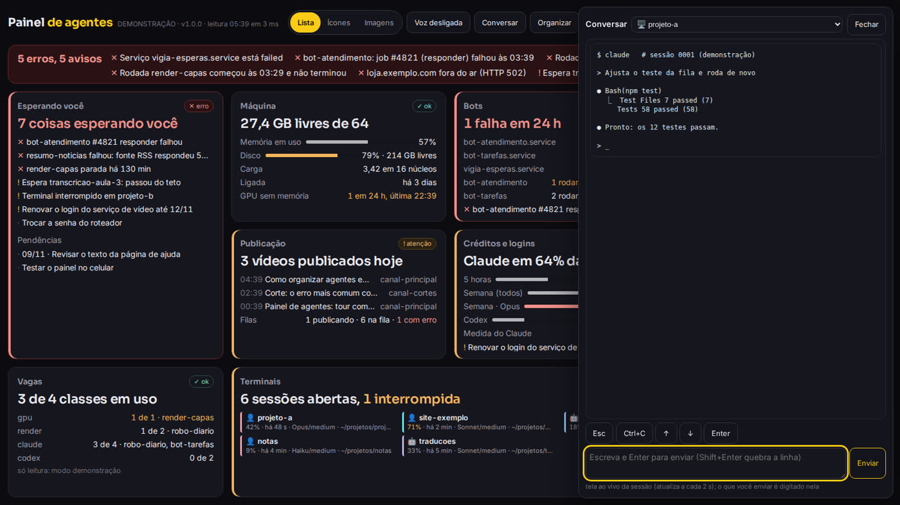
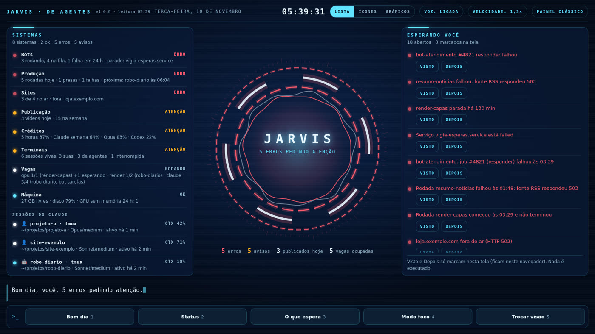
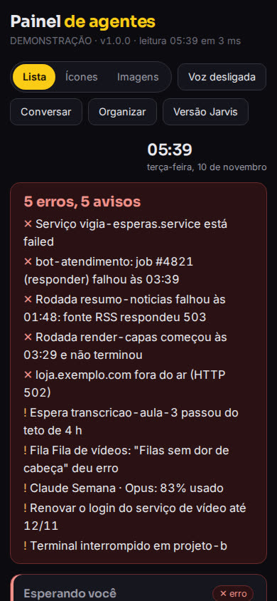

Terminais do Claude Code, robôs, filas e créditos num painel que você arruma do seu jeito — e de onde conversa com eles.
O painel-agentes é uma página que roda no seu computador e mostra, numa tela só, tudo o que seus agentes de IA estão fazendo: as sessões do Claude Code abertas (e se foi você ou um robô que abriu), os bots, as filas de publicação, os limites da assinatura e se seus sites estão no ar. Serve para quem deixa vários agentes trabalhando e perde a conta de onde está cada um. Você troca os quadros de lugar como preferir e, se quiser, conversa com um bot ou terminal ali mesmo. Precisa de Node 20+ e Linux; para só conhecer, o modo demonstração não lê nada seu.
Quem usa agentes acaba com cinco terminais abertos, dois robôs rodando de madrugada e uma fila que ninguém olhou. O painel junta tudo e diz o que está esperando por você.
Nove quadros: o que espera você, máquina, bots, produção, publicação, créditos, sites, vagas e terminais. Cada um diz em uma frase se está tudo bem.
O botão Organizar troca os quadros de lugar (tocando ou arrastando). Três jeitos de ver — Lista, Ícones e Imagens — e uma versão Jarvis com voz.
Abra uma sessão e leia a conversa, veja a tela ao vivo e, se você ligar, digite nela. A gaveta Conversar fala com um bot seu ou com um terminal.
Todas as imagens abaixo são do modo demonstração: dados inventados, nada de ninguém. É exatamente o que você vê ao rodar npm run demo.






PAINEL_ASSUMIR=1 e em sessões abertas no tmux do painel.


/jarvis)Os mesmos dados num visual de HUD (painel no estilo de filme de ficção científica): núcleo animado, uma frase por sistema, "Bom dia" falado e atalhos de teclado (1 Bom dia · 2 Status · 3 O que espera · 4 Modo foco · 5 Trocar visão).
Os quadros se empilham e os botões quebram de linha. Para ver de fora de casa, use rede local ou VPN (uma rede privada entre seus aparelhos), com senha (veja Segurança).
Os estados das filas, iguais em qualquer formato:
O painel não chama modelo de IA nem API. Ele lê arquivos que seus agentes e o Claude Code já gravam e mostra tudo junto. O que você não configurar aparece como "não configurado" — nunca erro.
~/.claude/sessions e ~/.claude/projects/proc, disco, journalctlsystemctl --user e bancos SQLite (banco de dados num arquivo), só leitura/painel: clássico, com Lista, Ícones e Imagens/jarvis: HUD com voz e atalhosUm computador ou VPS com Linux (os dados da máquina vêm do /proc) e o Node instalado.
Testado no Node 22.
node -v # v20 ou maior
Para baixar o projeto.
git --versionSó se for ver a tela ao vivo, Assumir ou abrir Novo terminal.
tmux -VComece pelo modo demonstração para conhecer a tela. Depois aponte para os seus arquivos.
Clona o repositório, instala as dependências e compila.
git clone https://github.com/inematds/painel-agentes cd painel-agentes npm ci && npm run build
Se aparecer um erro de compilação do better-sqlite3, pode seguir: ele é opcional. Sem ele o painel funciona igual; só o quadro Bots deixa de ler os bancos e mostra apenas os serviços.
Dados inventados nos nove quadros, sem login, sem ler nada seu. Abra http://127.0.0.1:3143/painel e depois /jarvis.
npm run demo # o mesmo que PAINEL_DEMO=1 node dist/index.js
Teste os botões: Lista, Ícones, Imagens, Organizar (troque dois quadros de lugar), Conversar e clique numa sessão em Terminais. Pare com Ctrl+C.
Copie o exemplo e apague o que você não usa. Toda chave é opcional: sem a chave, o quadro mostra "não configurado".
cp painel.config.exemplo.json painel.config.json nano painel.config.json # aponte os caminhos das suas filas, bots e sites
O exemplo vem com bots, filas e sites de mentira (bot-tarefas, exemplo.com): apague essas entradas ou troque pelos seus, senão os quadros mostram "sem dados" ou alertas falsos. O quadro Créditos só mostra os limites do Claude se a sua statusline (a linha de status do Claude Code) gravar o arquivo indicado em creditos.limites_claude.
As sessões do Claude Code aparecem sem configurar nada: o painel já procura em ~/.claude. A lista completa de chaves está no README.
Só o resumo (hash) da senha fica gravado. A senha precisa ter pelo menos 12 caracteres. Com --gerar, o painel cria uma senha forte e a grava no arquivo ~/.config/painel-agentes/senha-inicial.txt (o terminal mostra o caminho): leia, guarde e apague esse arquivo.
npm run senha # você digita a senha npm run senha -- --gerar # ou ele gera uma para você
Abre em http://127.0.0.1:3143/painel — só neste computador.
npm start
Para deixar rodando sempre, crie um serviço do systemd do usuário:
# ~/.config/systemd/user/painel-agentes.service
[Service]
WorkingDirectory=%h/painel-agentes
ExecStart=/usr/bin/node dist/index.js
Restart=on-failure
[Install]
WantedBy=default.target
systemctl --user daemon-reload systemctl --user enable --now painel-agentes systemctl --user status painel-agentes # está rodando? journalctl --user -u painel-agentes -n 30 # se não subiu, o erro aparece aqui loginctl enable-linger # numa VPS: continua rodando depois que você sai
Ajuste as duas linhas do serviço ao seu caso: WorkingDirectory é a pasta onde você clonou (ex.: %h/projetos/painel-agentes; %h quer dizer a sua pasta pessoal) e ExecStart usa o caminho que o comando which node mostrar (com nvm ele é diferente de /usr/bin/node).
Clique em Organizar, toque num quadro e depois no lugar para onde ele vai (ou arraste) e clique Pronto. A arrumação fica guardada no navegador daquele aparelho; Restaurar padrão volta ao original. Clique em qualquer quadro para ver o detalhe completo.
Desligados por padrão. Ligue só em rede de confiança — leia Segurança antes.
São duas chaves diferentes. PAINEL_ASSUMIR=1 liga digitar nos terminais (aba Terminal, terminal na gaveta Conversar e + Novo terminal). PAINEL_CHAT=1 liga só a conversa com o seu bot, e só se chat.bot.url estiver preenchido na config. Para ter as duas, ligue as duas na mesma linha:
PAINEL_ASSUMIR=1 PAINEL_CHAT=1 npm start
O painel só enxerga e digita em sessões abertas no tmux do painel: um tmux separado, com o nome painel. Uma sessão do Claude aberta fora dele aparece na lista, mas não aceita o Assumir. Para abrir um agente lá dentro:
tmux -L painel new -s meu-projeto claude
O + Novo terminal faz isso por você, sempre dentro da pasta configurada em novo_terminal.raiz.
O painel mostra muita coisa da sua máquina. Por isso ele começa trancado e você abre só o que precisa.
Sobe em 127.0.0.1. Para abrir na rede ("bind": "0.0.0.0"), a senha é obrigatória: sem senha, ele recusa e fica no próprio computador.
O login fica guardado no navegador de forma protegida, aparelho lembrado por 365 dias, 5 erros seguidos bloqueiam por 15 min e há o botão "Sair de todos os aparelhos".
Não chama modelo nem API; abre os bancos só para ler; chaves, tokens e senhas que aparecem em conversa e terminal saem mascarados.
No modo demo não lê arquivo, não roda comando, não acessa a rede, só responde no próprio computador e recusa qualquer escrita.
Esses três digitam no agente. Se o Claude ali roda sem pedir permissão, quem entrar no painel manda na sua máquina. Por isso vêm desligados. Se ligar: use só em rede local ou VPN, nunca exposto direto na internet. Cada envio fica registrado num log (só o início do texto, mascarado); o do Assumir é assumir.log, na pasta de dados do painel.
Existe uma versão simples, em Python e num arquivo só, para quem quer só olhar sem instalar Node.
| painel-agentes (esta) | jarvis-painel (versão simples) | |
|---|---|---|
| Precisa de | Node 20+ e Linux | Python 3 e um navegador |
| O que mostra | 9 quadros: sessões do Claude Code, bots, produção, filas item por item, créditos, sites, vagas, máquina e o que espera você | timers, filas, logs e suas pendências, em visual de HUD com voz |
| Organizar, Conversar, Assumir | sim (Conversar e Assumir desligados por padrão) | não: os botões só marcam na tela |
| Guia | esta página | jarvis-painel/guia |